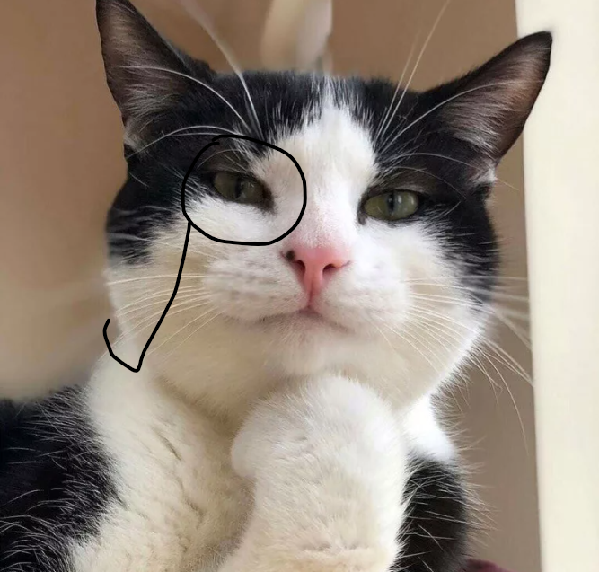

Фритрек и нулевой спринт: Подготовка к работе
</HTML>
Это было самое начало пути. На этом этапе важно было проникнуться основами и настроиться на учёбу. И, возможно, подумать, как новые знания могут повлиять на ваше будущее.
На этом насально мэтапе, я была воодушевлена и настроена на интересную и новую для меня деятельность.